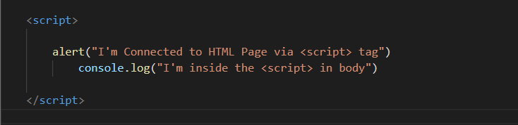
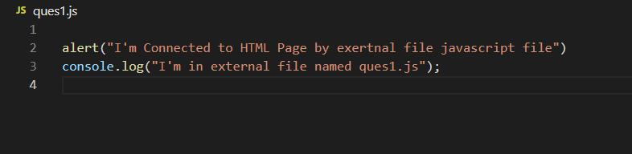
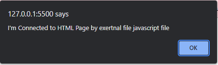

Ques 1.Create a HTML page and show the procedure of connecting JS file with it.
We can include JavaScript in our HTML in three ways:
1. Embedding code : To add the JavaScript code into the HTML pages, we can use the <script >..... </script> tag of the HTML that wrap around JavaScript code inside the HTML program. Users can also define JavaScript code in the <body> tag (or we can say body section) or
tag because it completely depends on the structure of the web page that the users use.  tag">Alert promt by internal <script> tag inside the body

2. Inline Code : Generally, this method is used when we have to call a function in the HTML event attributes. There are many cases (or events) in which we have to add JavaScript code directly eg., OnMover event, OnClick, etc.
Click Me for Inline Code3. External File We can also create a separate file to hold the code of JavaScript with the (.js) extension and later incorporate/include it into our HTML document using the src attribute of the <script> tag. It becomes very helpful if we want to use the same code in multiple HTML documents. It also saves us from the task of writing the same code over and over again and makes it easier to maintain web pages.
Including it as a link to an external file
Alert promt from external javaScript file named Ques1.js
We can see the the statement which we wrote in js in console.